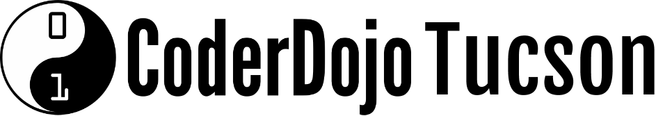

We have events happening year-round. Some are global events sponsored by the CoderDojo Foundation or other organizations and some are local events sponsored by CoderDojo Tucson and our community partners, like the Southern Arizona Arts and Culture Alliance CATALYST Arts & Maker Space.
Here are some events we've held, what's currently happenening, and what we have planned for the future.
CoderDojo Tucson is a dojo of the CoderDojo Foundation.